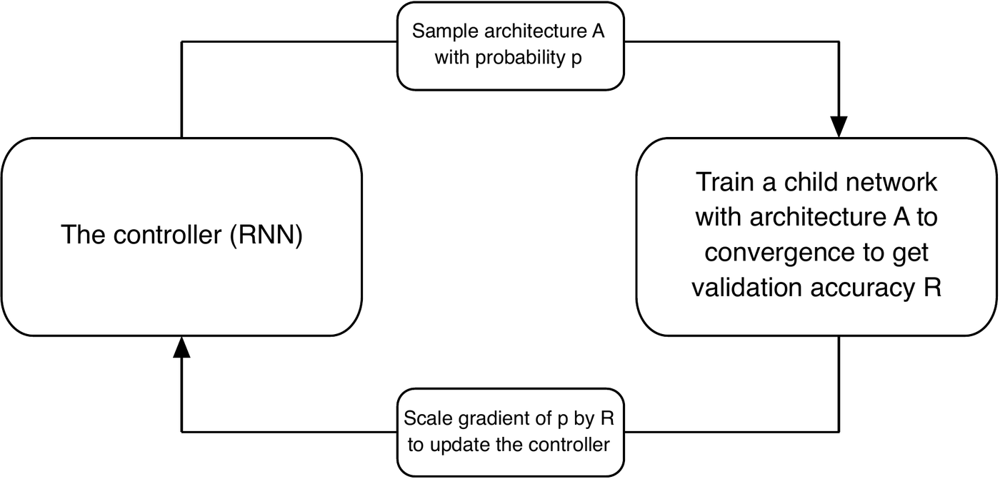
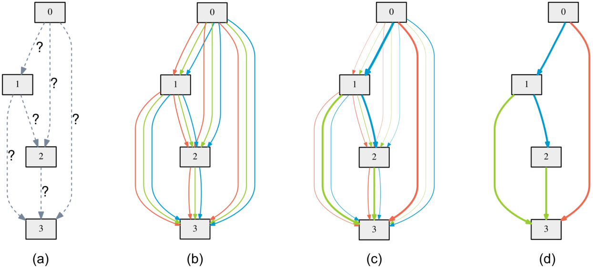

On this page
You know me, I like tuning models by hand. But let's be honest: designing architectures by hand is slow, it is biased toward whatever worked last time, and half of it is folklore. You make a layer wider here, you add a skip connection there, and you tell yourself there was a principle behind it.
Neural architecture search is the admission that the machine is better at this game than you are. Instead of hand-picking layers, you define what is allowed to change, how to explore the options, and how to score candidates without going broke. Then you let the search run.
Every NAS paper is the same three pieces with different details. Once you see them, the whole literature clicks:
Get these three right and the machine finds architectures you would never have tried. Get them wrong and you burn a GPU cluster to rediscover ResNet.
Say each of your $L$ layers picks one op out of $K$ candidates. The number of possible architectures is $K^L$. Brute force is dead on arrival either way, so the real question is not the size of the space, it is the search strategy. Here is a toy race:
Before you trust any search strategy, watch it race on a toy problem where we know the answer. The setup: 200 fake architectures with fixed true accuracies, mostly mediocre, with three good peaks hidden at #45, #130, and #185. Three strategies get the same GPU-hours budget. Random search samples uniformly. Evolution keeps mutating its current champion. Hill climbing takes small random steps and only moves uphill. Every architecture evaluated costs one GPU-hour, so the x-axis is money spent and the y-axis is the best accuracy found so far.
The toy search space itself: left to right is architecture #0 to #199, height is true accuracy, and the three bumps are the hidden peaks. Fading dots are architectures each strategy has already evaluated; the glowing dot is where it is sampling right now. As the race unfolds, green dots pile onto the tallest bump while orange rattles around one spot and red teleports everywhere.
Toy simulation with a fixed seed, so every run is reproducible. It is not real NAS results, but the ordering matches what the papers report: the strategy does the work.
Under the same GPU-hours budget, the strategy is everything. Random search is a lottery: it samples everywhere and only wins if it stumbles onto a peak. Evolution keeps mutating the current winner and climbs to the top peak. Hill climbing gets stuck on whichever peak is closest to where it started.
At 8 layers and 5 ops per layer you are already at 390,625 architectures. The space is too big. Brute force is not a plan.
One more thing before we move on: NAS can only find what the search space contains. If the good idea is not on the menu, no search strategy will invent it. The search space is where your bias hides now.
1. Random search. Do not laugh. Sample architectures uniformly, train each one briefly, keep the best. It is stupid easy and it is the baseline every NAS paper should beat. Sometimes they barely do. If your fancy method cannot beat random, it is not a search, it is a lottery ticket with extra steps.
2. Reinforcement learning. This is the NASNet approach. You train a controller, usually a small RNN, to sample architectures. Each sampled architecture gets trained and evaluated, and its validation accuracy comes back as a reward. The controller learns to sample better architectures over time.
Learning Transferable Architectures for Scalable Image Recognition.
CVPR 2018 · arXiv:1707.07012
The authors were trying to solve the cost problem of the original neural architecture search. Searching whole architectures from scratch worked, but it was brutally expensive (the first NAS paper trained every sampled child network to convergence, about 2,000 GPU-days), and an architecture found on a small dataset did not necessarily scale to a big one. Their answer was to search for cells instead of whole networks: a normal cell that preserves the feature-map size and a reduction cell that halves it.
The controller searches on CIFAR-10, where training is cheap, and the discovered cells get stacked and widened to build a network for ImageNet. That transfer is the whole point: the same cell design scales by construction, so the search cost stays on the small dataset while the payoff lands on the large one. The mapping from RL to NAS is almost embarrassingly direct:
This is the entire algorithm as the authors drew it. Four boxes, one loop. The controller proposes, the child network trains and gets scored, the score scales the update, and the controller proposes again. The loop is the point.

| RL concept | NAS version |
|---|---|
| Agent | The controller (an RNN) |
| Action | Picking an architectural choice, e.g. kernel size 3, 5, or 7 |
| Environment | Training and evaluating the sampled network |
| Reward | Validation accuracy, sometimes minus a latency penalty |
| Policy | How the controller samples its choices |
In the paper the controller is trained with PPO (Proximal Policy Optimization), a policy-gradient method. The intuition this page walks through is the simpler REINFORCE form: scale the gradient by the reward. The loss is:
The whole controller loop fits in a few lines. Here the "reward" is faked with a lookup table standing in for real training, so you can see the controller mechanics without the GPU bill:
import torch
import torch.nn.functional as F
kernel_sizes = [3, 5, 7]
logits = torch.nn.Parameter(torch.zeros(len(kernel_sizes)))
optimizer = torch.optim.Adam([logits], lr=0.1)
# Stand-in for "train the candidate and measure accuracy".
# Pretend kernel 5 is the winner.
TRUE_PERF = {3: 0.70, 5: 0.90, 7: 0.60}
for step in range(50):
probs = F.softmax(logits, dim=0)
dist = torch.distributions.Categorical(probs)
action = dist.sample()
kernel = kernel_sizes[action.item()]
reward = TRUE_PERF[kernel] + torch.randn(1).item() * 0.02
loss = -dist.log_prob(action) * reward # REINFORCE
optimizer.zero_grad()
loss.backward()
optimizer.step()
Run it a few times: the controller's probability mass drifts toward kernel 5, usually visibly within the 50 steps. It is noisy without a baseline, so some runs wander off first, which is exactly the variance problem step 6 fixes. Same loop, real training instead of the lookup table, and you have NASNet's controller.
3. Evolution. Keep a population of architectures. Train them, kill the worst, mutate the best by randomly tweaking a layer or a connection, repeat. This is AmoebaNet. Survival of the fittest, but for conv nets. No gradients, no controller, just mutation and selection. It works embarrassingly well and it parallelizes beautifully, because every member of the population trains independently.
4. Differentiable search (DARTS). This is the clever one. Instead of making hard discrete choices, you make every choice soft and learn it with gradient descent. Each block holds all candidate ops at once, and the block's output is a weighted blend:
The authors were trying to solve the same cost problem from the opposite direction. RL and evolution treat the search space as discrete: sample an architecture, train it, score it, repeat, thousands of GPU-days. Their question was whether the search itself could be made differentiable, so the architecture could be learned with gradient descent in one go instead of sampled and scored thousands of times.
The trick is a continuous relaxation of the search space. Every edge between nodes holds all candidate operations at once, mixed by learnable architecture weights $\alpha$, and the whole thing becomes a bilevel optimization: the inner loop trains the network weights, the outer loop tunes the architecture. Solving the inner problem exactly at every step would be insane, so they cheat with a one-step approximation, and the search drops from thousands of GPU-days to a few. That is the idea the figure below draws, panel by panel.
Here $o_i$ is candidate op number $i$, and $\alpha_i$ is its architecture weight, a learnable number that says how much the search currently likes that op. Softmax over $\alpha$ turns the likes into blending weights. During the search every op runs and the block outputs the weighted mixture. At the end you keep the op with the biggest $\alpha$ and throw away the rest. The trick is: replace a hard choice with a soft average, optimize it with gradients, then harden it.
This is the paper's own picture of the whole trick, and it lines up one-to-one with what you just read. Watch the edges: they start as question marks, become a tangle of candidate ops, then thin out as gradient descent decides, and what is left is your architecture.

import torch
import torch.nn as nn
import torch.nn.functional as F
class DartsBlock(nn.Module):
def __init__(self, in_channels, out_channels):
super().__init__()
self.ops = nn.ModuleDict({
'conv3x3': nn.Conv2d(in_channels, out_channels, 3, padding=1, bias=False),
'conv5x5': nn.Conv2d(in_channels, out_channels, 5, padding=2, bias=False),
'skip': nn.Identity(), # only valid when in_channels == out_channels
})
self.alpha = nn.Parameter(torch.zeros(len(self.ops))) # architecture weights
def forward(self, x):
weights = F.softmax(self.alpha, dim=0) # soft vote over ops
return sum(w * op(x) for w, op in zip(weights, self.ops.values()))
block = DartsBlock(16, 16)
out = block(torch.randn(4, 16, 8, 8)) # soft mixture of all three ops
# After the search: keep the op with the largest alpha, drop the rest.
best_op = list(block.ops.keys())[block.alpha.argmax()]
But wait, there are now two things to learn: the architecture weights $\alpha$ and the ordinary network weights $w$. DARTS nests them as a bi-level optimization:
$\alpha$ is the architecture, $w$ is the normal weights. The inner problem says: for a fixed $\alpha$, train $w$ on the training set. The outer problem says: pick the $\alpha$ whose trained network does best on the validation set. Two optimizations, one nested inside the other:
DARTS nests two optimizations. The inner loop trains the weights for a given architecture, the outer loop tunes the architecture itself. That nesting is the whole idea, and it is also why DARTS is finicky in practice.
Solving the inner problem exactly at every step would be insane, so DARTS cheats with a one-step approximation: update $w$ by one gradient step, then update $\alpha$ as if that one step were the full training. It is approximate and everyone knows it, but it works well enough to search in days instead of years.
Training every candidate from scratch is how you spend 2,000 GPU-days. The trick the whole modern field runs on is weight sharing. You build one giant supernet that contains every candidate architecture as a sub-network, like a choose-your-own-adventure book. Each layer holds all of its candidate ops, and one subnet is just one path through the layers:
One supernet holds every candidate op at every layer. The highlighted path is one subnet. All subnets train on the same shared weights, which is what makes the search affordable.
You train the supernet by sampling one path per step and updating only that path's weights. Every op still gets trained, because over many steps every op gets sampled many times:
import random
import torch
import torch.nn as nn
import torch.nn.functional as F
class SuperConvBlock(nn.Module):
def __init__(self, in_channels, out_channels):
super().__init__()
self.ops = nn.ModuleDict({
'k3': nn.Conv2d(in_channels, out_channels, 3, padding=1, bias=False),
'k5': nn.Conv2d(in_channels, out_channels, 5, padding=2, bias=False),
'k7': nn.Conv2d(in_channels, out_channels, 7, padding=3, bias=False),
})
def forward(self, x, choice):
return self.ops[choice](x)
class SuperNet(nn.Module):
def __init__(self):
super().__init__()
self.block = SuperConvBlock(3, 16)
self.pool = nn.AdaptiveAvgPool2d(1)
self.fc = nn.Linear(16, 10)
def forward(self, x, choice):
x = F.relu(self.block(x, choice))
x = self.pool(x).flatten(1)
return self.fc(x)
supernet = SuperNet()
optimizer = torch.optim.SGD(supernet.parameters(), lr=0.01)
for step in range(200):
x = torch.randn(8, 3, 32, 32) # synthetic batch, stands in for real data
y = torch.randint(0, 10, (8,))
choice = random.choice(['k3', 'k5', 'k7']) # one subnet per step
loss = F.cross_entropy(supernet(x, choice), y)
optimizer.zero_grad()
loss.backward()
optimizer.step()
Once the supernet is trained, you score subnets using the shared weights, pick the winner, and retrain it from scratch. That last step matters: the shared weights are a compromise, good enough for ranking candidates, not for final accuracy. Hence, you should always retrain the winner from scratch.
Quick honesty note: the numbers below are from the papers, not from my own runs. I have not personally burned 3,000 GPU-days. Each block names the method, the dataset, the search cost, and what the found architecture achieved.
Read the search costs as the real story. RL and evolution found great architectures and cost thousands of GPU-days. Then DARTS showed up and got comparable results for about 4 GPU-days, and the field never looked back. That cost collapse is why weight sharing won.
The most famous product of this whole lineage is EfficientNet-B0: 77.1% top-1 on ImageNet with 5.3M params. It came from an RL search over a compact mobile search space where the reward was accuracy minus a latency penalty, measured on real phone hardware instead of just counting FLOPs. After the search found B0, they stopped searching and scaled it up with compound scaling to get B1 through B7.
NAS works, but it has sharp edges. Here are the ones that bite:
NAS finds the architecture. Knowledge distillation teaches a small model to behave like a big one. They are the two halves of the same goal: big-model accuracy on a small-model budget. The knowledge distillation tutorial is the natural next stop.